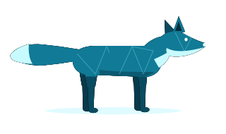

O lugar da sua galera pra conversar e jogar
O FoXxy junta canais de voz, vídeo, compartilhamento de tela e bate-papo num app só. Cria o servidor da galera, chama os amigos e entra na call quando quiser.

Não quer instalar? Baixe a versão portátil — é só abrir.
Entre quando estiver livre — sem precisar ligar
Os canais de voz ficam sempre abertos: é só clicar e você já está na call. Dá pra ver quem está lá antes de entrar, ligar a câmera, usar aperte-para-falar e silenciar tudo com um atalho, mesmo com o jogo aberto.
alguém pra um valorant agora? 🎮
@Gabriel chama o Rafa, falta um
bora, tô entrando na Frequência 1
Bate-papo do jeito da galera
Mencione os amigos com @, reaja com emoji, fixe o que importa e encontre qualquer mensagem antiga na busca. Mandou errado? Edite ou apague. E as notificações chegam mesmo com o app minimizado.
Mostre sua tela e programe junto
Compartilhe a tela ou só a janela do jogo, com o áudio junto. E nos canais de código a galera escreve no mesmo arquivo ao mesmo tempo e roda o programa ali mesmo.
Bora chamar a galera?
Baixe o FoXxy, crie seu servidor e mande o convite pros amigos.